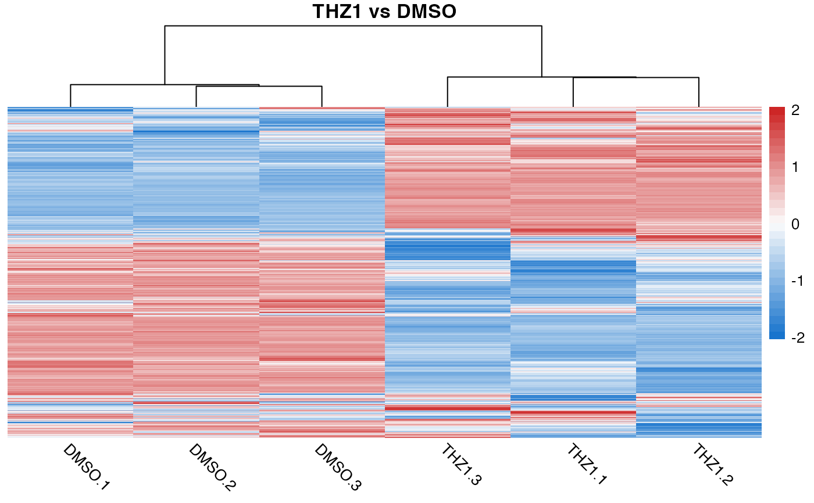
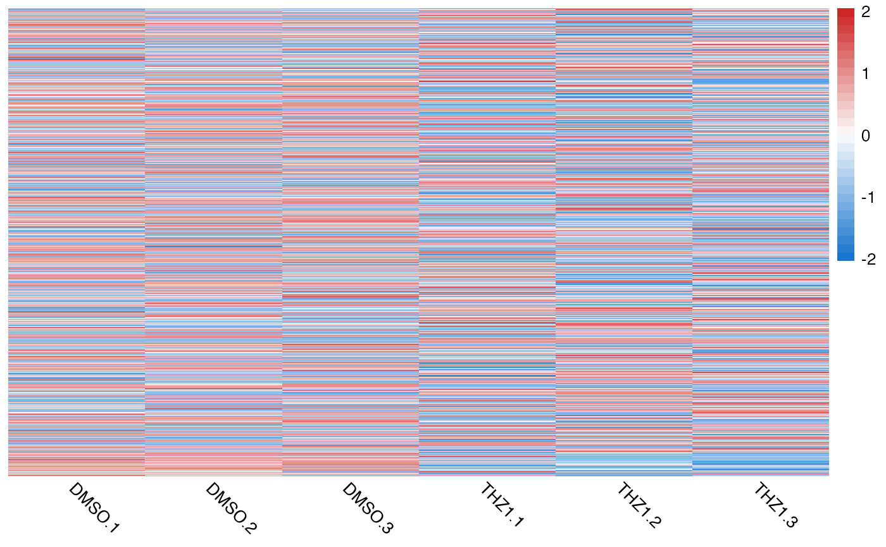

Generate a heatmap using pheatmap with sensible defaults for RNA-seq.
quickmap() will also attempt to perform vectorized scaling, clustering,
and distance calculations with functions from the Rfast,
fastcluster and rdist packages in order to speed up
calculations for large gene expression matrices.
Usage
quickmap(
mat,
diverging_palette = TRUE,
fix_extreme = FALSE,
thresh = 1.96,
removeVar = NULL,
...
)Arguments
- mat
numeric matrix to be passed onto pheatmap function
- diverging_palette
logical. Default(TRUE). Sets the color scale to a diverging palette (blue -> white -> red). If FALSE, set the color to a continuous color palette
viridis::magma(), useful for un-scaled expression data.- fix_extreme
logical. Should the extreme values at the ends of a diverging palette be fixed colors? Default FALSE.
- thresh
If fix_extreme=TRUE then at what value should the color scale be fixed? Since scaling is implied by the use of this argument, the default value is set to 1.96 (positive and negative).
- removeVar
If not NULL, remove this proportion of features based on the variance across rows. Default NULL. Note, if removeVar is used the lowest variance features are removed prior to scaling the input data
- ...
args to be passed to
pheatmap()function
Details
The default arguments to pheatmap::pheatmap() are:
scale = "row"show_rownames = FALSEborder_col = NAcluster_rows = TRUEcluster_cols = TRUEcolor = colorRampPalette(c("dodgerblue3", "grey99", "firebrick3"))(30)for diverging_palette = TRUEcolor = rev(viridisLite::magma(n = 30))for diverging_palette = FALSEtreeheight_row = 0clustering_distance_rows = "correlation"clustering_distance_cols = "euclidean"clustering_method = "ward.D2"angle_col = 315
You can pass in additional arguments or simply override the defaults as well.
Examples
# display heatmap of scaled count data and add title to the plot
quickmap(GSE161650_lc, main = "THZ1 vs DMSO")

# Remove 90% lowest variance features and fix color scale
quickmap(
GSE161650_lc,
removeVar = 0.9,
main = "THZ1 vs DMSO",
fix_extreme = TRUE,
thresh = 1
)
#> Removing 90% lowest variance features...
